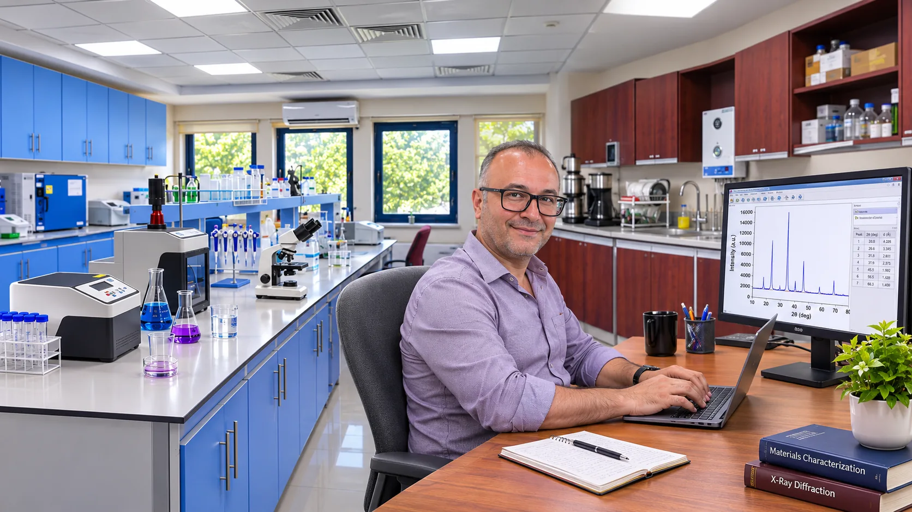

01 / 06
Fonksiyonel Camlar & Radyasyon Zırhlama
Bor esaslı camlarda bileşim–yapı–özellik ilişkileri; optik, fiziksel, mekanik ve radyasyon zırhlama performansı.
Eskalen Lab; nanomalzemeler, fonksiyonel camlar, biyopolimer kompozitler ve ilgili malzeme sistemleri üzerine bilimsel fikirleri ortak çalışmalara dönüştürmek için oluşturulmuş bir araştırma ve iş birliği platformudur.

Disiplinler arası malzeme araştırmalarında deneysel çalışmalarla karakterizasyonu ve uygulama odaklı yaklaşımları birleştiriyoruz.
Bor esaslı camlarda bileşim–yapı–özellik ilişkileri; optik, fiziksel, mekanik ve radyasyon zırhlama performansı.
Karbon esaslı floresan nanomalzemelerin sentezi, optik özellikleri ve algılama sistemlerindeki uygulamaları.
Kitosan ve nişasta bazlı filmlerde katmanlı çift hidroksitler, g-C₃N₄ ve diğer katkılarla işlevsellik geliştirilmesi.
Nanomalzeme temelli korozyon inhibitörlerine yönelik araştırma fikirleri ve elektrokimyasal karakterizasyon için iş birlikleri.
Nanokompozitlerin ışık altında fotokatalitik davranışı, boya bozunumu ve işlevsel malzeme uygulamaları.
UV–Vis, fotolüminesans, yapısal ve morfolojik analizler ile malzeme özelliklerinin modellenmesine yönelik ortak çalışmalar.
Ortak bir araştırma fikriniz, deneysel bir sorunuz veya proje öneriniz varsa değerlendirmekten memnuniyet duyarız.
Ortak yayınlar, tamamlayıcı uzmanlık alanları ve ulusal/uluslararası araştırma projeleri.
Uygun kapsam ve imkânlar çerçevesinde araştırma fikirleri, akademik danışmanlık ve bilimsel üretim.
Fonksiyonel malzemeler, karakterizasyon gereksinimleri ve uygulama odaklı araştırma sorunları.
Erasmus+ akademik hareketliliği, kısa süreli araştırma ziyaretleri ve ortak proje geliştirme.
Birlikte tanımladığımız bilimsel soruyu uygun sentez, karakterizasyon ve veri analizi yöntemleriyle ele almayı hedefliyoruz.
Ölçüm ve altyapı olanakları, ilgili kurumsal laboratuvarların erişim ve iş birliği koşullarına bağlıdır. Eskalen Lab adı bağımsız bir laboratuvar tesisinden ziyade bir araştırma ve iş birliği odağını ifade eder.
Araştırma konunuzu, kurumunuzu ve düşündüğünüz iş birliği biçimini birkaç cümleyle paylaşmanız yeterli. Ortak yayın, proje, araştırma ziyareti veya teknik çalışma önerilerini görüşebiliriz.
eskalen@ksu.edu.tr